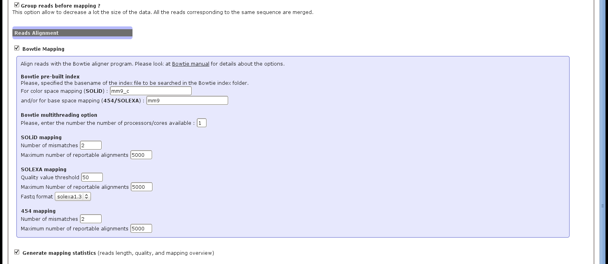

The Figure 2 presents the different parameters to set for the short reads mapping using the Bowtie alignment tool.
First, the user has to select if the reads has to be grouped before mapping (see section 5.2.1). We highly recommended to use this option, as it reduces a lot the size of the input reads (and output files), and have only very few impact (if any) on the results. All the reads corresponding to the same sequence are merged, and the related quality values are averaged.
Figure 2:
ncPRO-seq web interface: set alignment parameters
|  |
The following Bowtie options can then be available. For details explanation, please see the http://bowtie-bio.sourceforge.net/manual.shtml Bowtie manual page.
- Bowtie pre-built index. The name of the index file to be searched in the Bowtie index folder (as specified in the system configuration file during installation).
- Mapping options. Using the interface, all input file are aligned with the options '-a -best -strata -y' to always select the best hits. Then, the number of mismatches (up to 3), the maximum number of reportable alignments or the fastq format have to be choose according to the input data type, and the goal of the analysis.
- Bowtie multithreading option. Number of CPUs used by Bowtie to perform the alignment.
Finally, the user can also ask for a quality mapping report. In this case, the following outputs are generated :
- Reads length distribution.
- Sequence length distribution (only the distinct reads are used).
- Number of reads aligned on the genome reference.
Nicolas Servant
2012-05-31